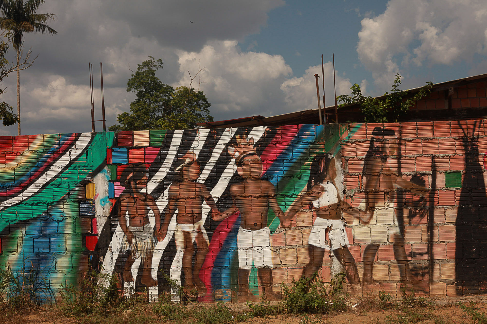

Conheça o projeto
Explore, aprenda e participe conosco nessa jornada de descoberta e respeito pelas "Vozes em Resistência" dos Povos Indígenas brasileiros
"Vozes em Resistência", um projeto que nasceu a partir do esforço conjunto de estudantes do curso de Desenvolvimento de Sistemas da Etec de Carapicuíba 144, durante um ano de trabalho interdisciplinar em 2023. Nosso principal objetivo é promover o conhecimento e celebrar a rica diversidade cultural dos Povos Indígenas brasileiros. Além disso, buscamos facilitar o acesso à informação, oferecendo uma plataforma abrangente com diversos tipos de conhecimentos sobre essas comunidades. Este projeto representa não apenas uma conquista acadêmica, mas um compromisso com a conscientização, respeito e valorização da pluralidade cultural que molda a identidade indígena no Brasil
Conteúdo do Site
Desenvolvemos um site que abrange uma variedade de temas relacionados aos Povos Indígenas, incluindo aspectos fundamentais como o que define um povo indígena, sua influência sociocultural, a demarcação das terras indígenas, análise do projeto de lei 490 e a presença dos indígenas na política. Este conteúdo foi elaborado com o propósito de informar, educar e sensibilizar, proporcionando uma compreensão mais profunda e holística sobre essas comunidades.Acervo compartilhado
Em parceria com o projeto "Raízes Originárias", que também aborda a temática dos Povos Indígenas, criamos um acervo que agrega recursos e informações relacionadas. A colaboração entre os dois projetos fortalece a abordagem abrangente, permitindo que nossos usuários explorem diferentes perspectivas e nuances dessas culturas ricas e diversas.Pesquisa de campo
Conduzimos uma pesquisa de campo no Centro Paula Souza, envolvendo 244 participantes (alunos, professores e corpo docente), para avaliar o conhecimento sobre os povos indígenas. Os resultados destacaram a perspectiva em relação à influência dos povos originários na construção sociocultural do Brasil e na causa indígena.Pesquisa de Campo
Quando questionados sobre a importância da cultura indígena em nosso país, os resultados foram os seguintes: 45% (109) afirmaram que consideram importante e possuem pleno conhecimento sobre os aspectos em que somos influenciados; 48% (120) consideram importante, mas não sabem exatamente em quais aspectos ocorre a influência; 2% (4) acreditam que não há influência com base em conhecimentos prévios e 5% (11) simplesmente não acreditam na existência de qualquer influência. Desse modo, podemos perceber, pela quantidade de pessoas que afirmaram que não existe influência da cultura indígena em nosso país e pelas que disseram que existe, porém não têm conhecimento sobre o assunto, que, embora os povos indígenas tenham sido e sejam uma parte significativa da construção sociocultural do Brasil, essa influência não é conscientemente reconhecida (ela existe, mas as pessoas não reparam). Isso resulta em um diagnóstico trágico: a maior parte das pessoas não compreende a história do próprio país em que vivem, embriagadas pela ignorância decorrente do racismo estrutural no Brasil.
Agora com base nos dados obtidos na escala de 1 a 5, que avaliou o reconhecimento e a preocupação com o movimento indígena, podemos observar uma distribuição variada nas respostas. A maior porcentagem, 33% (81), indicou o valor máximo, 5, demonstrando um alto nível de reconhecimento e preocupação com a causa indígena. Em contrapartida, 10,5% (25) marcaram o valor mínimo, 1, revelando uma baixa preocupação ou reconhecimento. É importante destacar que a maioria dos participantes está distribuída nas pontuações intermediárias: 9,5% (24) assinalaram 2, 23% (56) escolheram 3 e 24% (58) selecionaram 4. Isso sugere que há um grau considerável de reconhecimento e preocupação com o movimento indígena, embora existam também aqueles que demonstraram um menor envolvimento. Esses resultados revelam a necessidade contínua de promover maior conscientização sobre a causa indígena e a importância do reconhecimento das contribuições e desafios enfrentados pelos povos indígenas no Brasil. É fundamental incentivar a educação e o diálogo sobre a cultura e os direitos dos indígenas, a fim de construir uma sociedade mais inclusiva e justa, na qual haja um reconhecimento pleno da diversidade sociocultural do país.
Observando a longa trajetória histórica dos povos Tupi-Guarani na sociedade e política brasileira, fica evidente que a permanência e resistência desses grupos é uma luta constante pelo direito à preservação de sua cultura, tradições e territórios. Ainda que muitas batalhas tenham sido vencidas, há muito a ser conquistado em relação aos direitos indígenas, visto que muitos grupos são ainda atualmente ameaçados pelo agronegócio, mineração, entre outros. Através de medidas como a demarcação de terras, preservação ambiental, valorização das expressões artísticas, educacionais e científicas desses povos, foi possível ampliar o diálogo e apreciação pelas culturas indígenas, mas é preciso continuar lutando contra a falsa ideia de que o indígena é um elemento do passado, e não um agente fundamental no presente e futuro do país.
Projeto idealizado e desenvolvido por: